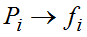
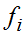
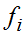
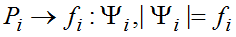
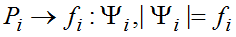
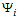
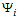
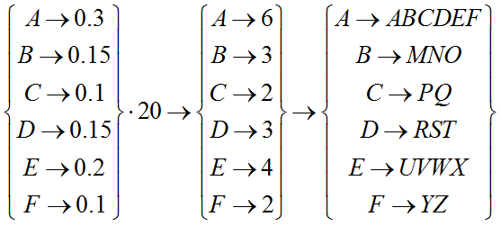

4.1.1. Омофонические шифры
4.1.1. Омофонические шифры
Идея привнесения случайности в процесс шифрования не является новой. В качестве простейшего примера применения вероятностного механизма можно рассмотреть омофоническое шифрование, относящееся к историческим шифрам. Основным недостатком шифров простой замены, как одноалфавитных, так и многоалфавитных, является неравномерное распределение символов открытого текста и, соответственно шифртекста, поэтому они легко вскрываются частотным криптоанализом. Применение омофонического шифрования позволяет получить криптограммы с одинаковыми частотами появления символов. Рассмотрим один из способов реализации гомофонического шифрования. Пусть имеется таблица частот символов алфавита. Для того чтобы ее составить, необходимо взять большой объем данных, содержащих только текст, и посчитать, сколько раз встречается каждый символ. Отношение количества вхождений буквы в текст к общему количеству текстовых символов будет частотой или встречаемостью этой буквы. Для использования омофонического шифрования необходимо, чтобы частоты всех букв были выражены целыми символами. Чтобы все частоты выразить целыми числами, необходимо меньшую частоту частоту взять за единицу, а остальные вычислить путем деления частоты на минимальную частоту и приведения результата к целому числу. Для повышения точности необходимо самую маленькую частоту взять за 5, а остальные вычислить с помощью пропорции. Это позволит получить точность не хуже 20% от минимальной частоты. Пусть в результате выполнения вышеописанной операции построения целочисленных частот символов мы имеем соответствие , где  - это символы алфавита, а  − соответствующие им частоты, тогда каждому символу необходимо поставить в соответствие множество случайных символов
- это символы алфавита, а  − соответствующие им частоты, тогда каждому символу необходимо поставить в соответствие множество случайных символов  такое, что , т. е. мощность множества равна встречаемости (целому значению частоты) символа. Все символы всех множеств должны быть не повторяющимися, поэтому в процессе шифрования произойдет увеличение размера шифртекста. При выполнении шифрования каждый символ открытого текста
такое, что , т. е. мощность множества равна встречаемости (целому значению частоты) символа. Все символы всех множеств должны быть не повторяющимися, поэтому в процессе шифрования произойдет увеличение размера шифртекста. При выполнении шифрования каждый символ открытого текста  заменяется на случайно выбранный символ из соответствующего множества . При этом, каждый знак выходного алфавита будет использоваться, в среднем, одинаковое количество раз. Расшифрование производится в обратном порядке, определяется какому подмножеству принадлежит принятый символ, и, таким образом, восстанавливается исходный символ. Основной недостаток такого подхода − увеличение количества знаков в выходном алфавите (а значит, увеличение длины шифртекста), основное достоинство − элемент случайности при шифровании, т. е. при шифровании одинаковых криптограмм получится разный шифртекст. Если символов исходного алфавита недостаточно для кодирования всех символов открытого текста, то используются двухбуквенные символы.
заменяется на случайно выбранный символ из соответствующего множества . При этом, каждый знак выходного алфавита будет использоваться, в среднем, одинаковое количество раз. Расшифрование производится в обратном порядке, определяется какому подмножеству принадлежит принятый символ, и, таким образом, восстанавливается исходный символ. Основной недостаток такого подхода − увеличение количества знаков в выходном алфавите (а значит, увеличение длины шифртекста), основное достоинство − элемент случайности при шифровании, т. е. при шифровании одинаковых криптограмм получится разный шифртекст. Если символов исходного алфавита недостаточно для кодирования всех символов открытого текста, то используются двухбуквенные символы.
В качестве примера рассмотрим простейший алфавит из 10 символов:
.
Тогда текст «ACFCCDA» может быть зашифрован как «BPYPQTE» или как «EQZPPRC».
Сегодня в практических шифрах такой подход не применяется (например, из-за нестойкости к атакам на основе известного открытого текста), но может быть использован как составная часть алгоритма шифрования [31].